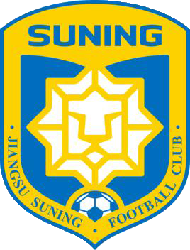

江苏苏宁队发展历史
江苏苏宁足球俱乐部（Jiangsu Suning Football Club）是中国江苏省的一所职 业足球俱乐部，现征战中国足球协会超级联赛。球队主场为南京奥林匹克体育中心体育场。
1997年，随着江苏省体委和俱乐部高层对于球队的重视，征战乙级联赛的球队战绩趋于稳定。从预赛、小组赛和复赛中突围后，球队成功晋级次年甲B联赛。之后球队又在半决赛中淘汰重庆红岩，并在决赛中凭借钟俊的绝杀1-0击败成都五牛，获得中国足球乙级联赛冠军。 2000年1月7日，江苏舜天集团接手俱乐部，更名为江苏舜天足球俱乐部。

2015年，苏宁集团与俱乐部签约，并在资金投入、商业运营、文化建设、青训培养等领域开展全面合作。2015年12月21日，苏宁集团举行“江苏足球传承仪式”，全面接手原江苏国信舜天足球俱乐部，新的江苏苏宁足球俱乐部正式开始启动。球队更名为江苏苏宁足球俱乐部。